Experience the power and elegance of the Porsche 911 Carrera
Discover the most important informations about the Porsche 911 Carrera right here
Discover.Discover the most important informations about the Porsche 911 Carrera right here
Discover.More than 95 years of automotive excellence
-The Porsche 911 Carrera is one of the most iconic and long-standing sports cars in history.
-It was first introduced in 1964 as part of the Porsche 911 lineup, developed by Porsche. The car is known for its rear-engine layout and distinctive design. The name “Carrera” comes from the famous Carrera Panamericana.
-Over the years, the porsche 911 Carrera has evolved through many generations, gaining advanced technology and improved performance while maintaining its classic shape and identity. Today, it remains a global symbol of luxury and high performance.
-By the 1970s, the 911 Carrera RS 2.7 became one of the most legendary variants, featuring a lightweight body and a powerful 210 hp engine.
-In 1989, Porsche introduced the 964 generation, bringing modern features like ABS and power steering while keeping the iconic 911 shape.
-Today, the 992 generation represents the pinnacle of 911 engineering, combining cutting-edge technology with the timeless design that has defined the car for over six decades.
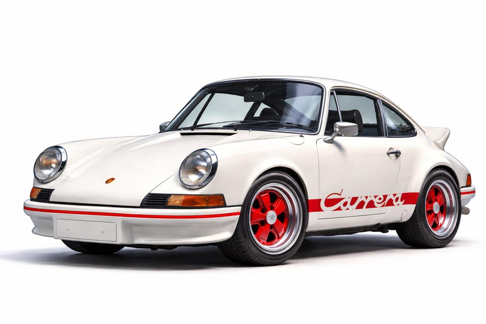
The Porsche 911 Carrera features a sleek, sporty design that combines elegance with high performance
-The design of the Porsche 911 Carrera is carefully planned and precisely engineered, starting from detailed sketches that focus on aerodynamics, balance, and performance. Designers refine every line to create a shape that reduces air resistance while maintaining the iconic 911 silhouette. Through advanced digital modeling and testing, the car’s form is optimized to ensure both speed and stability. What makes it unique is the perfect blend of tradition and innovation, where classic Porsche styling meets modern engineering, resulting in a timeless and highly recognizable sports car design.
-The designers of the Porsche 911 Carrera play a crucial role in shaping its iconic look, combining creativity with advanced engineering knowledge. They work closely in teams, starting with hand-drawn sketches before moving to digital modeling and aerodynamic testing. Every detail, from the curves to the headlights, is carefully refined to match Porsche’s identity of performance and elegance. Their goal is to preserve the heritage of the 911 while continuously innovating to meet modern design and technology standards.
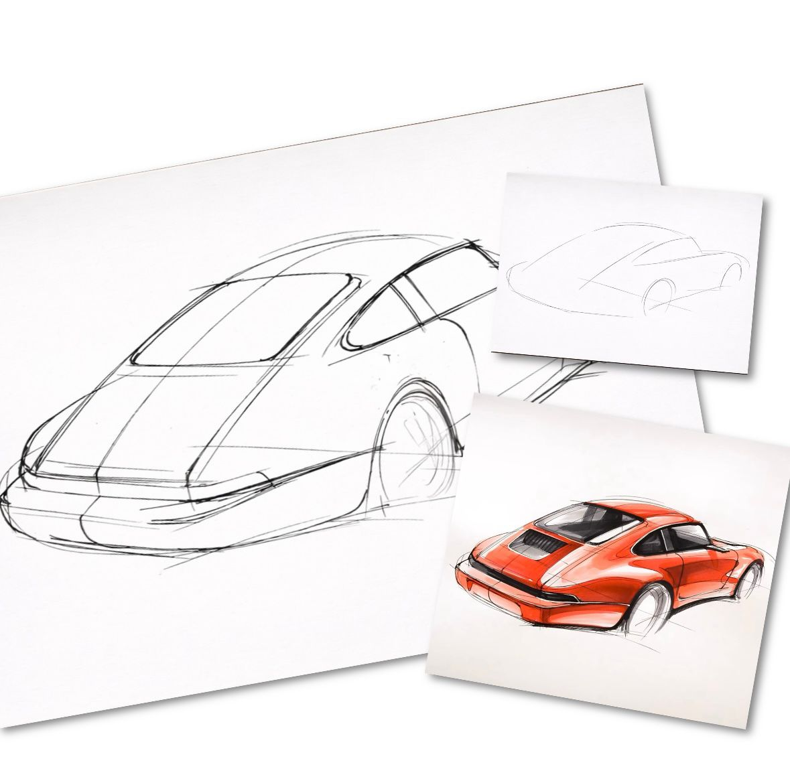
Porsche 911 Carrera — When Power Meets Elegance
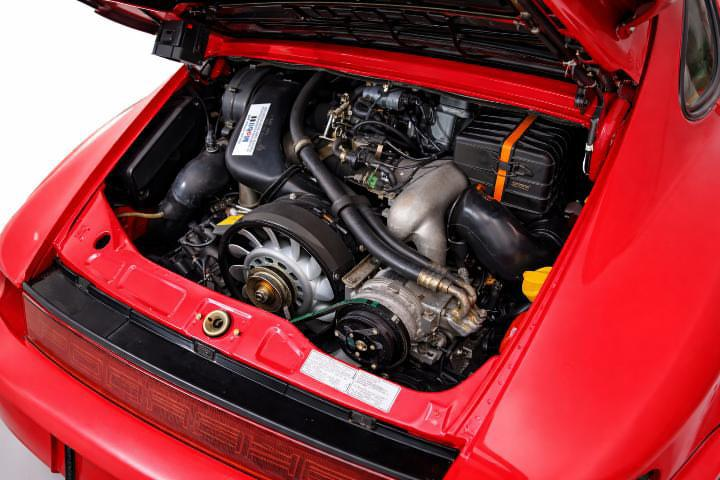
-The Porsche 911 Carrera features a powerful Flat-Six engine that gives it fast acceleration and immediate response, with excellent stability and outstanding sporty performance on the road.
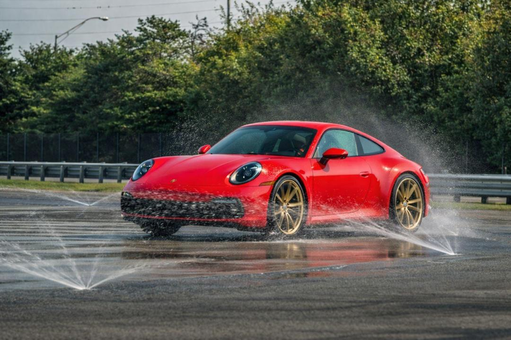
-The Porsche 911 Carrera features an advanced sports suspension system that gives it high stability on the road, especially at corners and high speeds. This system helps her to have precise control and perfect balance, making driving safer and more professional even in difficult circumstances.
-The Porsche 911 Carrera features modern interior technology that includes a digital screen and an intelligent control system, with a luxurious cabin that provides comfort and ease of use while driving.
Every detail reflects German precision and the spirit of racing
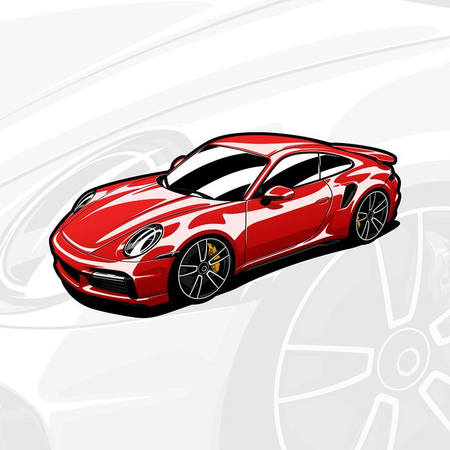
-Its shape is distinctive and stable across generations with strong modern and streamlined touches.
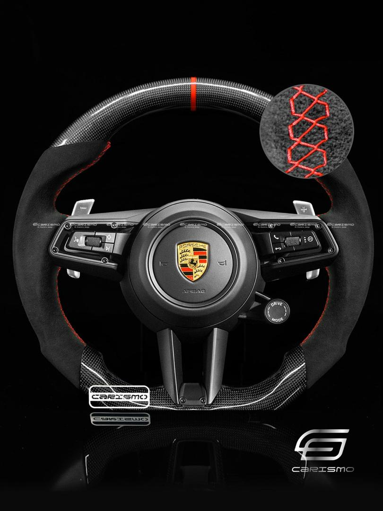
-Covered with luxurios leather for the palm of the hand during long driving.

-Provides strong grip whith the road and better control.
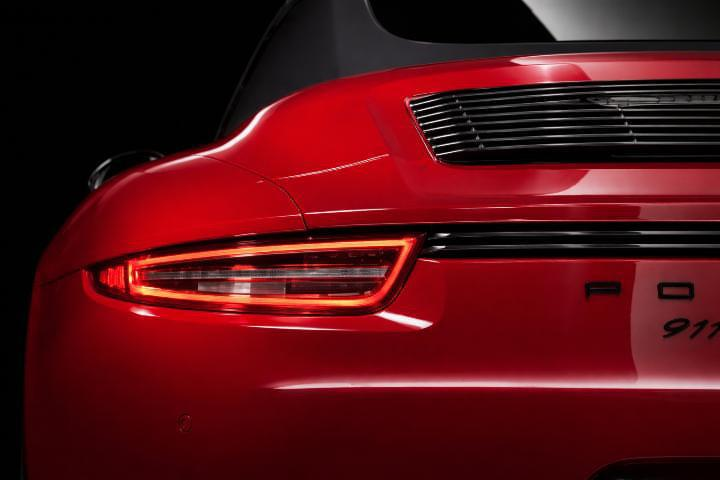
-Stretching across the full width, it delivers a bold modern look and unmistakable presence from afar.
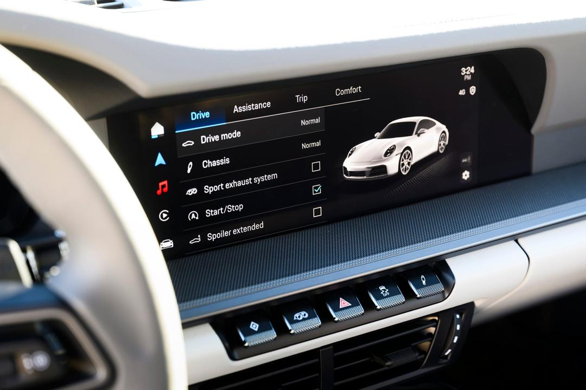
-Information is presented in a modern way while maintaining the classic character.

-A 3.0-litre 6-cylinder engine (Flat-6) gives high performance and great power.

-Gives an enjoyable driving experience and excellent control.Its speed is about 290–295 km/h.

-Controls airflow to optimise performance and cooling.
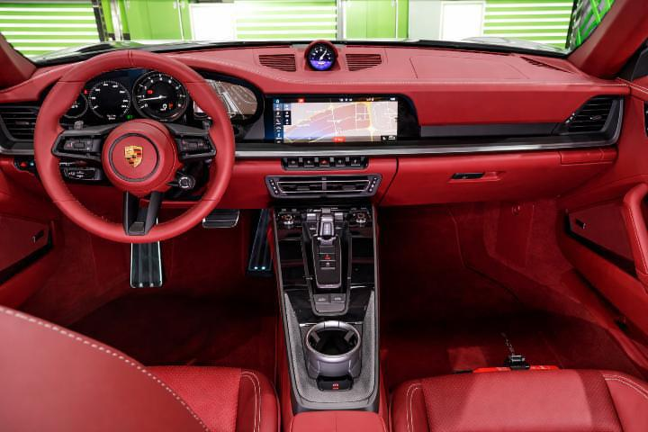
-High quality leather and aluminum gives a sense of luxury.
Performance in the Porsche 911 Carrera isn’t just speed… it’s the feeling that the road was made for you
Acceleration 0-100 km/h with sport chrono package
Power combined (KW) / Power combined (PS)
Top speed
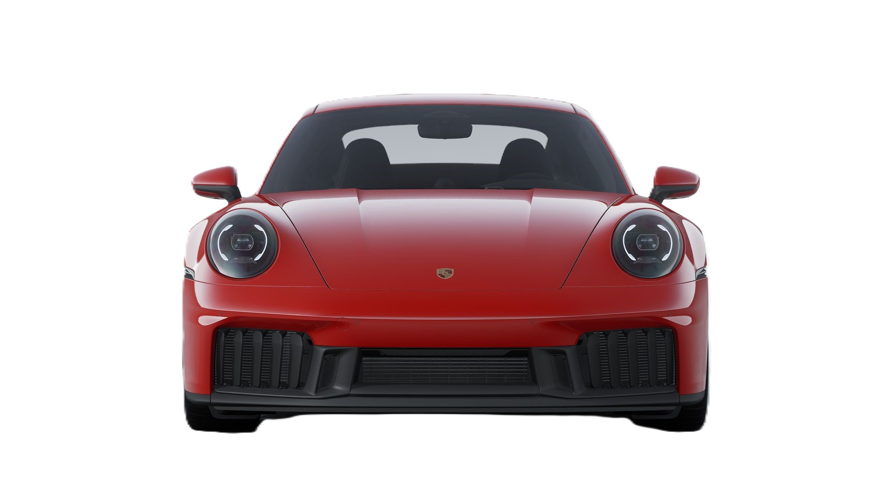
A timeless icon is embodied, where the pinnacle of luxury and precision engineering is seamlessly showcased in a design that reflects elegance, meticulous craftsmanship,and captivates with every detail
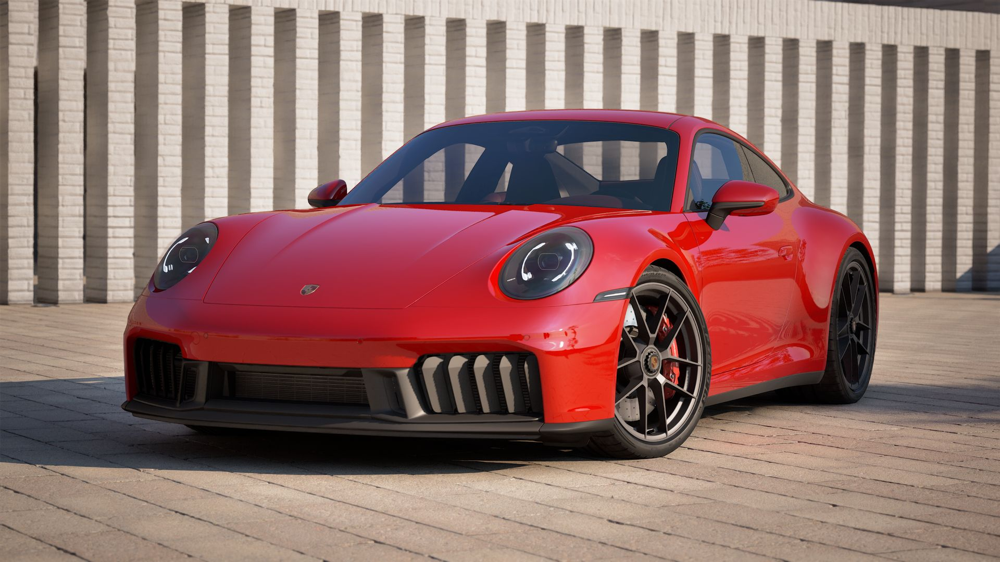
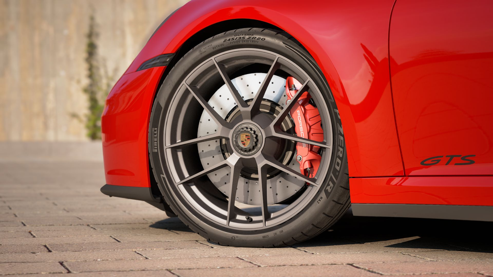
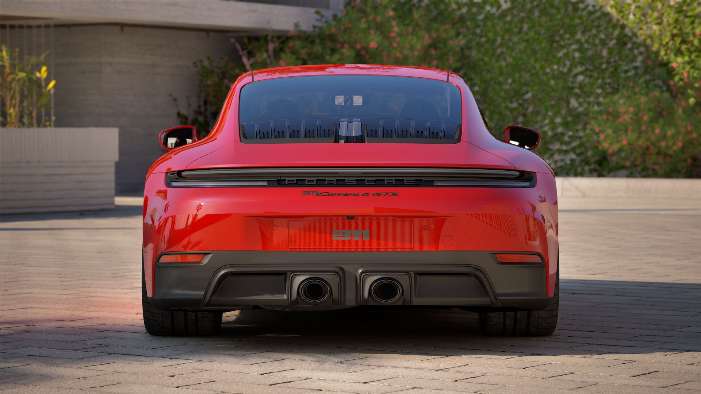
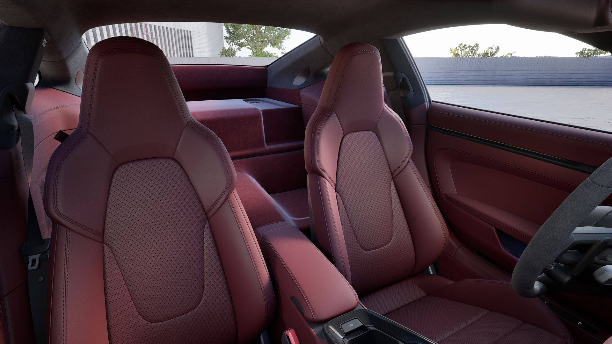